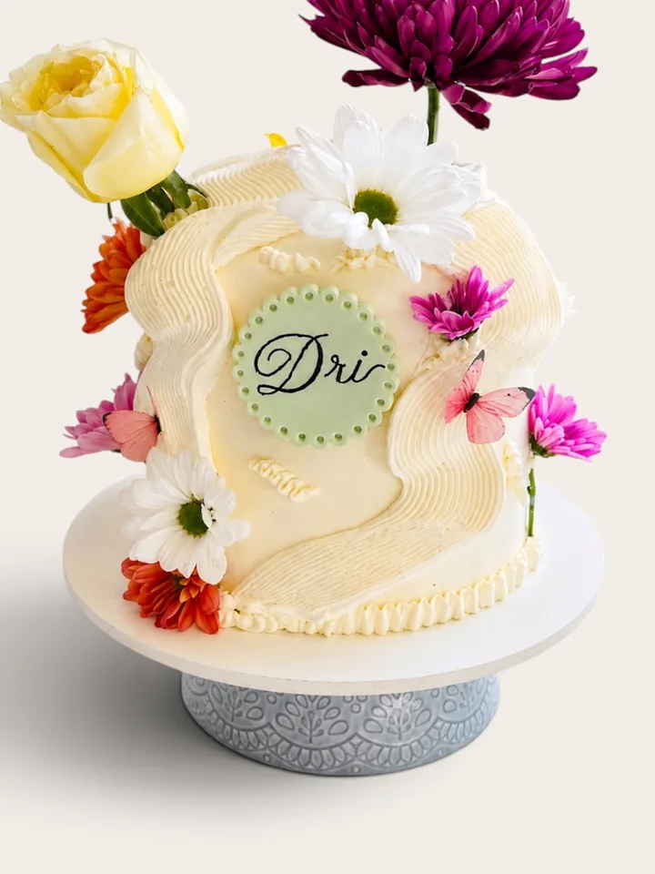

→
→
16 Mulheres, 16 Histórias
Os bolos · 5 tamanhos · a partir de $45
 →
→Brigadeiros
12, 24, 50 ou 100

Cupcakes
caixa com 6

Biscoitos
decorados

Sobre a Camila
Confeiteira do interior de SP, fazendo bolos no North Shore desde 2024.
uma homenagem à avó
@carula.cake
Encomendar
WhatsApp · 5 dias antes


